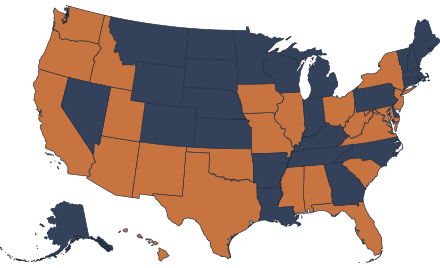
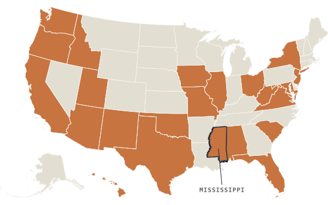

27 states have active AI-in-education legislation this year. 5 are already signed into law. Districts are being handed frameworks and guidance documents — but a policy PDF isn't training. We turn state guidance into a module your staff will actually complete.

State departments of education are moving fast on AI policy — faster than most districts can translate that policy into actual staff training. A template or guidance document tells your district what to require. It doesn't tell your front-office staff, teachers, and administrators how to apply it in the moment a parent asks about a chatbot, or a teacher wonders if using AI to draft a family email crosses a line.
That gap — between policy and practice — is exactly where risk lives, and exactly where we build.
This isn't a future problem. It's a this-school-year problem.

Some states have passed sweeping AI-in-education legislation. Others have only issued guidance. Some haven't addressed it at all yet. The legislative picture will keep changing — but the underlying need doesn't wait for a bill number.
Across every state we've researched, the same six standards keep showing up, whether they're written into law or not:
These aren't legal requirements in every state. They're what responsible use actually looks like — and legislation is still catching up to them, state by state. Staff readiness for AI shouldn't be contingent on which bill your legislature happened to pass this session.
Mississippi is further ahead than most states — and it shows exactly the gap districts are facing everywhere.
The Mississippi Department of Education issued statewide AI classroom guidance as early as 2025.
SB 2429 established an AI in Education Task Force charged with developing guidelines for training K-12 educators to use AI tools responsibly.
The Mississippi Artificial Intelligence Network published a governance template for districts to adapt locally — a planning document, not a finished training program.
A module staff sit through, understand, and can apply.
The gap we fillMississippi did the policy work. What's still missing in most districts — Mississippi included — is the actual training delivery: a real module staff sit through, understand, and can apply. That's the gap we fill.
Knowing what AI is, what it's good and bad at, and how to think critically about its output.
The actual rules for what staff and students are permitted to do with it — and the consequences when they don't.
A staff member can understand AI well and still misuse it. A policy without literacy just produces confused compliance. Districts need both, paired — which is why we build both into one module, not two separate initiatives competing for the same training hour.
Free AI literacy resources exist — and they're worth using. But they teach staff how to use a specific tool. They aren't built around your state's specific guidance, your district's actual policy language, or the liability your compliance team is accountable for.
That's the gap between “training exists” and “training matches what we're legally required to do.” We build the second one.
A scenario-based training module — built the same way as our mandated-reporter demo (Exhibit A) — covering both AI literacy and appropriate use for staff and students. Delivered as a SCORM package that runs inside your existing LMS, so your compliance team gets the same completion tracking and audit trail you already rely on for other required training.
Every state's guidance is different. We adapt the module's scenarios, terminology, and standards references to match your state's specific framework — so staff are trained on your actual policy, not a generic one.
For districts who want more than a self-paced module, we offer live-facilitated PD sessions — a higher-touch layer on top of the core training, for kickoff sessions, administrator briefings, or deeper staff workshops.
This module is in active development. Districts who join the early adopter list get first access when it's ready, input into what the customization covers, and founding-district pricing that won't be offered again once the module ships broadly.
See a live preview of how this works →15 minutes. No obligation — just a look at where your state's guidance is, and where your staff training isn't yet.
See it in practice →